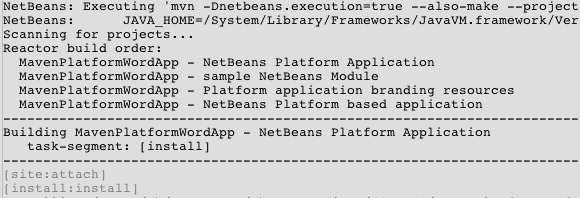
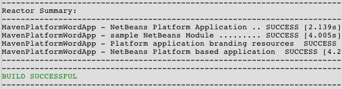

Apache NetBeans
Apache NetBeansLatest release
Quick Start for NetBeans Platform 6.8 Using Maven
| This tutorial needs a review. You can edit it in GitHub following these contribution guidelines. |
Welcome to the NetBeans Platform!
This document is a quick demonstration of how to create a simple NetBeans Platform application and module and use Maven for the build framework. In this document you will use Maven archetypes to create the NetBeans Platform application and module. You will use the Swing UI toolkit and "Matisse" GUI Builder to create a window component in the module. The modular aspect of the NetBeans Platform enables you to develop and expand the functionality of your application simply by adding new modules.
This document is based on the Ant-based NetBeans Platform Quick Start for NetBeans Platform 6.8. and illustrates some of the differences between using Ant and Maven to develop NetBeans Platform applications. After you understand how Maven is different from Ant, you can easily proceed through other tutorials on the the NetBeans Platform Learning Trail.
If you are new to the NetBeans Platform, you might want to watch the the screencast series Top 10 NetBeans APIs.
| You do not need to download a separate version of the NetBeans Platform to develop applications for the NetBeans Platform. Typically, you develop the applications and modules in the NetBeans IDE and then only include the modules that are necessary to run the NetBeans Platform and your application. |
Before starting this tutorial you may want to familiarize yourself with the following documentation.
Configuring Maven
If this is your first Maven project you will want to check the Maven configuration settings in the Options window. To complete this tutorial you must have Maven installed on your local system. You can download the installer from the Maven site.
-
Select the Miscellaneous category in the Options window and click the Maven tab.
-
Specify the location of your local Maven installation (requires 2.0.9 or newer).
-
Check that the location of the local Maven repository is correct.
-
Click OK.
The IDE uses your local Subversion client to retrieve Maven artifacts from remote repositories. You might want to check that a Subversion client is installed and configured correctly by typing svn --version on the command line.
For details on setting up Subversion, see the Guided Tour of Subversion.
Viewing the Maven Repositories
The artifacts that are used by Maven to build all your projects are stored in your local Maven repository. When an artifact is declared as a project dependency, the artifact is downloaded to your local repository from one of the registered remote repositories.
The NetBeans repository and several well-known indexed Maven repositories are registered and listed in the Repository Browser window by default. The NetBeans repository contains most of the public artifacts necessary for you to build your project. You can use the Maven Repository Browser to view the contents of your local and remote repositories. You can expand the Local Repository node to see the artifacts that are present locally. The artifacts listed under the NetBeans repository nodes can be added as project dependencies, but not all of them are present locally. They are only added to the Local Repository when they are declared as project dependencies.
To open the Maven Repository Browser:
-
Choose Window > Other > Maven Repository Browser from the main menu.

Figure 1. Screenshot of Maven Repository Browser
When your cursor is over an artifact, the IDE displays a tooltip with the artifact’s coordinates. You can view additional details about an artifact by double-clicking the artifact’s JAR file in the browser.
You can search for an artifact by clicking the Find button in the toolbar of the Maven Repository Browser or by using the Quicksearch textfield in the main toolbar.
For more about managing Maven classpath dependencies and working with Maven repositories in the IDE, see the Dependency Management section of Best Practices for Apache Maven in NetBeans 6.x.
To see a demonstration of using the Artifact Viewer, see the Working with Maven Dependencies screencast.
Creating the NetBeans Platform Application Project
In this section you use the New Project wizard to create a NetBeans Platform Application from a Maven archetype. The wizard will create the Maven module projects that you need to develop a NetBeans Platform application. The wizard also creates a sample module that provides an example of how the Maven projects are configured. In this quickstart you will modify the default sample module, but you can delete the sample module when you develop your own applications.
Perform the following steps to create the NetBeans Platform application using the New Project wizard.
-
Choose File > New Project (Ctrl-Shift-N) to open the New Project wizard.
-
Select Maven Project from the Maven category. Click Next.
-
Select Maven NetBeans Platform Application Archetype. Click Next.
-
Type MavenPlatformWordApp for the Project Name and set the Project Location. Click Finish. image::images/maven-quickstart68_maven-nbm-newprojectwizard1.png[title="Screenshot of New Project wizard"]
Note. If this is your first NetBeans Platform application using Maven, it can take some time to create the projects because the IDE needs to download any necessary artifacts from the NetBeans repository.
When you click Finish, by default the IDE creates the following Maven project types.
-
NetBeans Platform Application. This project is a container project for the Platform application and lists the modules to include and the location of the project’s repositories. This project does not contain any sources. The IDE generates the modules containing the sources and resources in sub-directories of this project.
-
NetBeans Platform based application. This project specifies the artifacts (sources) needed for compiling the application. The required dependencies (IDE artifacts, module artifacts) are specified in the
pom.xmlfile of the project. -
Platform application branding resources. This project contains the resources used for branding the application.
-
sample NetBeans Module. This project is created by default as an example of a module of a platform application. This project is not required to compile the application. When you develop your application you can delete this module and remove the module as a dependency.

Figure 2. Screenshot of project structure in Projects window
When you create the project, you will see that some of the projects (for example, the NetBeans Platform based application project) are badged because some dependencies declared in the pom.xml file (POM) are unavailable. For all Maven projects, the POM is located under the Project Files node in the Projects window.
Note. If the branding module appears as <Badly formed Maven project> in the Projects window, right-click the project in the Projects window and choose Reload Project. See MavenMissingExtensionPluginError.
If you look at the POM of the NetBeans Platform based application generated by the wizard, you can see that by default the sample module artifact ( module1 ) is listed as a required dependency for compiling the application. The artifact will be available after you build the sample module project and install the artifact in your local repository.
<dependency>
<groupId>com.mycompany</groupId>
<artifactId>*module1*</artifactId>
<version>1.0-SNAPSHOT</version>
<type>nbm</type>
</dependency>If you look at the POM for the sample module you see that the project has the artifactId module1.
<parent>
<groupId>com.mycompany</groupId>
<artifactId>MavenPlatformWordApp</artifactId>
<version>1.0-SNAPSHOT</version>
</parent>
<modelVersion>4.0.0</modelVersion>
<artifactId>*module1*</artifactId>
<packaging>nbm</packaging>
<version>1.0-SNAPSHOT</version>
<name>MavenPlatformWordApp - sample NetBeans Module</name>The sample module is a NetBeans module. To build a NetBeans module you need to use the nbm-maven-plugin . If you look at the POM for the sample module, you can see that the IDE automatically specified the plugin to use to build the project as a NetBeans module.
<plugin>
<groupId>org.codehaus.mojo</groupId>
<artifactId>*nbm-maven-plugin*</artifactId>
</plugin>If you look at the POM for the NetBeans Platform Application, you can see that module1 is listed as one of the modules in the application.
<modules>
<module>*module1*</module>
<module>branding</module>
<module>application</module>
</modules>Modifying the Sample Module
In this section you will modify the sample module to add a window component and a button and text area.
Adding a Window Component to the Sample Module
In this exercise you will use a wizard to add a Window Component to the sample module.
-
Right-click MavenPlatformWordApp - sample NetBeans Module in the Projects window and choose New > Other to open the New File wizard.
-
Select Window Component in the Module Development category. Click Next.
-
Select output in the Window Position dropdown list. Click Next.
-
Type Text in the Class Name Prefix field. Click Finish.
The wizard displays a list of the files that will be created and the files that will be modified.

Figure 3. Screenshot of window component page in New File wizard
When you click Finish, in the Projects window you can see that the IDE generated the classes TextAction.java and TextTopComponent.java in com.mycompany.mavenplatformwordapp under Source Packages. The IDE also generated additional resource files in com.mycompany.mavenplatformwordapp under Other Sources. In this exercise you will only edit TextTopComponent.java so you can close the other files.
You can view the structure of the project in the Files window. To compile a Maven project, only Java files can be located under Source Packages ( src/main/java directory in the Files window). Non-Java files (e.g., XML files) need to be located under Other Sources ( src/main/resources directory in the Files window).
Modifying the Window Component
You will now add the text area and button elements to the window component by performing the following steps.
-
Click the Design tab of
TextTopComponent.javain the editor.
-
Drag and drop a button and a text area from the Palette onto the window.
-
Right-click the text area and choose Change Variable Name, and then type text as the name. You will use the name when accessing the component from your code.
-
Set the text of the button to "Filter!". image::images/maven-quickstart68_maven-nbm-textopcomponent.png[title="Screenshot of window component page in New File wizard"]
-
Double-click the Filter! button element in the Design view to open the event handler method for the button in the source code editor. The method is created automatically when you double-click the button element.
-
Modify the body of the method to add the following code and save your changes.
private void jButton1ActionPerformed(java.awt.event.ActionEvent evt) {
*String s = text.getText();
s = s.toUpperCase();
text.setText(s);*
}You can use the code completion in the editor to help you type the code.
Building and Running the Application
-
Right-click the project node of the MavenPlatformWordApp NetBeans Platform based application and choose Build with Dependencies.
The default action mapped to Build with Dependencies is to build the project using the Reactor plugin. When you build a project using the Reactor plugin, the dependencies of the sub-projects are built before the containing project is built. The Output window displays the build order.

Figure 4. Screenshot of Reactor build order in Output window
The results of the build are also displayed in the Output window.

Figure 5. Screenshot of successful Reactor build in Output window
If you look at the Projects window, you will see that the projects no longer have badges because the artifacts of the required dependencies are now in the Local repository under the com.mycompany node.

Figure 6. Screenshot of Local repository
-
Right-click the project node of the MavenPlatformWordApp NetBeans Platform based application and choose Run.
When you Run the application, the IDE launches the NetBeans Platform 6.7 application. To test the application, perform the following steps:
-
Choose Window > Text from the main menu of the platform application. image::images/maven-quickstart68_maven-nbm-wordapp.png[title="Screenshot of Text window in application"]
-
Type some characters in the text area and click Filter!
When you click Filter!, the characters that you typed are changed to upper case and displayed in the text area.
Updating the Platform Version and Splash Image
The archetype that you used to create the application specifies 6.7 as version of the platform. In this section you will update the version of the NetBeans Platform to 6.8 and change the splash screen that appears when you launch the application.
Updating the Platform Version in NetBeans Platform Application
In this exercise you will update the POM file to specify the NetBeans 6.8 version of the artifacts.
-
Expand the MavenPlatformWordApp NetBeans Platform Application project node in the Projects window.
-
Expand the Project Files node and double-click
pom.xmlto open the POM in the editor.
-
Modify the
<netbeans.version>element to change the version toRELEASE68and save your changes.
<properties>
<netbeans.version>*RELEASE68*</netbeans.version>
<brandingToken>foo</brandingToken>
</properties>
</project>Updating the Dependencies in NetBeans Platform based application
In this exercise you will update the POM file to change the artifact for the IDE cluster to platform11.
-
Expand the MavenPlatformWordApp NetBeans Platform based application project node in the Projects window.
-
Expand the Project Files node and double-click
pom.xmlto open the POM in the editor.
-
Modify the
<artifactId>element to change the version toplatform11and save your changes.
<dependency>
<groupId>org.netbeans.cluster</groupId>
<artifactId>*platform11*</artifactId>
<version>${netbeans.version}</version>
<type>pom</type>
</dependency>Replacing the Splash Screen
In this exercise you will replace the default splash image that is displayed when you launch the application. By default the branding module generated by the IDE contains an image that is used as the splash image. You can replace this with a different image by performing the following steps.
-
Locate the default splash image (
splash.gif) in the following directory of the MavenPlatformWordApp Platform application branding resources module project.-
In the Projects window:
Other Sources > nbm-branding > core > core.jar > org > netbeans > core > startup -
In the Files window:
src > main > nbm-branding > core > core.jar > org > netbeans > core > startup
-
-
Replace the default image with an image named
splash.gif.
The default size of the splash image is 473 x 300. For example, you can copy the image below to the startup directory.

Figure 7. Example of default splash image
Building and Running the Application
You can now build and run the NetBeans Platform application again by performing the same steps as before.
-
Right-click the project node of the MavenPlatformWordApp NetBeans Platform based application and choose Clean.
-
Right-click the project node of the MavenPlatformWordApp NetBeans Platform based application and choose Build with Dependencies.
-
Right-click the project node of the MavenPlatformWordApp NetBeans Platform based application and choose Run.
When you click Run, you can see in the Output window the the IDE now builds the standalone NetBeans Platform application using the NetBeans Platform 6.8 cluster Platform11 .

Figure 8. Screenshot of Local repository
The application also displays the new splash image when the application starts.
This quickstart demonstrated how creating a NetBeans Platform application using Maven is not very different from creating an application using Ant. The major difference is understanding how the Maven POM controls how the application is assembled. For more examples on how to build NetBeans Platform applications and modules, see the tutorials listed in the NetBeans Platform Learning Trail.
There will soon be more examples that demonstrate how to use Maven to build NetBeans Platform applications.
If you have any questions about the NetBeans Platform, feel free to write to the mailing list, dev@platform.netbeans.org, or view the NetBeans Platform mailing list archive.